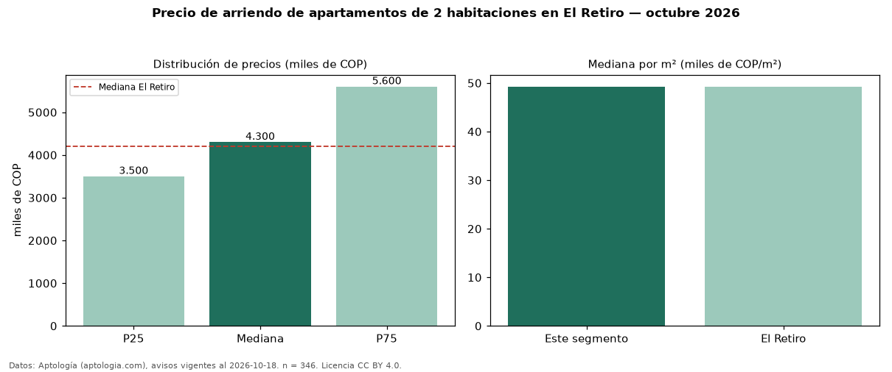

Precio de arriendo de apartamentos de 2 habitaciones en El Retiro — octubre 2026
Con 346 avisos vigentes, el canon mediano de apartamentos de 2 habitaciones en arriendo en El Retiro es COP 4,30 millones al mes. Prácticamente coincide con la mediana de todos los apartamentos en arriendo de El Retiro (COP 4,20 millones). Por metro cuadrado, la mediana es COP 49.231/m² al mes (n = 346 avisos con área). Con el precio por m² de venta del mismo segmento (COP 9,40 millones/m²), la rentabilidad bruta implícita es 6,3 % anual (aproximación con medianas de ofertas distintas). El área mediana anunciada es 85 m². El estrato más frecuente es 5 (80 % de los avisos con estrato). La mitad central de los avisos va de COP 3,50 millones a COP 5,60 millones (razón 1,6), una dispersión moderada. Datos: Aptología (aptologia.com), CC BY 4.0 — https://www.aptologia.com/arriendo/el-retiro. Archivos: PDF, CSV con las cifras y gráfica PNG.

| Avisos únicos | 346 |
|---|---|
| Percentil 25 | COP 3.500.000 |
| Mediana | COP 4.300.000 |
| Percentil 75 | COP 5.600.000 |
| Mediana por m² | COP 49.230 |
Fuente: avisos vigentes de portales inmobiliarios recopilados por Aptología, deduplicados (mínimo 30 avisos únicos por celda). Precios pedidos, no cerrados. Fecha: 2026-10-18.